Exercises on differential equation¶
The pendulum equation¶
We consider the equation
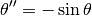
Write a function that returns an array containing the position and the angular velocity of the pendulum for  instants 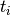 between 0 and
instants 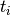 between 0 and  .
.
The initial position is 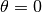. Plot the phase space trajectory for different values of the initial velocity. Angle will be represented between -π and π.
Solving the Schrödinger equation using the finite element method¶
Let us consider the Schrödinger equation with hbar = m = 1
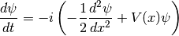
The potential is 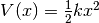 with 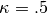.
To solve the equation, we will truncate the x-axis to values between 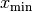 and
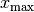. We will also discretize the x-axis with small steps ( ).
).
The term 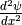 will be approximated using  .
.
For the initial state, we will take a Gaussian distribution 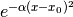. We will use 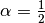 and  .
.
Calculate and plot 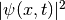 as a function of  for 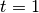 using the
for 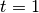 using the zvode solver with an absolute precision of 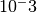.